در زبان پایتون، دستور if سادهترین و پرکاربردترین ابزار برای پیادهسازی ساختار شرطی است. این دستور یک عبارت منطقی را ارزیابی میکند که نتیجۀ آن میتواند True یا False باشد. اگر نتیجۀ شرط True باشد، بلوک کد مربوط به آن اجرا میشود و در غیر این صورت، این بلوک کد اجرا نخواهد شد.
نوع اول ساختارشرطی if
if condition:
statement
جدول ۲
عملگر مقایسهای
عملگر
کاربرد
==
مساوی است
!=
مساوی نیست
<
کوچکتر از
>
بزرگتر از
>=
بزرگتر یا مساوی
<=
کوچکتر یا مساوی
شرط (condition): عبارتی منطقی است که نتیجۀ آن True یا False است.
دستورات (statements): دستوراتی هستند که فقط در صورت درست بودن شرط اجرا میشوند.
تورفتگی (Indentation): این دستورات باید با یک tab نسبت به دستور if جلوتر نوشته شوند.
عملگرهای مقایسهای (Comparison Operators): این عملگرها برای مقایسه دو مقدار یا دو متغیر استفاده میشوند و نتیجه آنها همیشه یکی از دو مقدار True یا False است (جدول2).
عملگر مساوی (==): برای مقایسه دو مقدار یا دو تا متغیر استفاده میشود تا مشخص شود برابر هستند یا نه.
مثال: برنامهای بنویسید که نام کاربر را دریافت کند. اگر نام واردشده برابر با مقدار admin باشد، پیام "welcome admin!" را نمایش دهد (شکل 51).
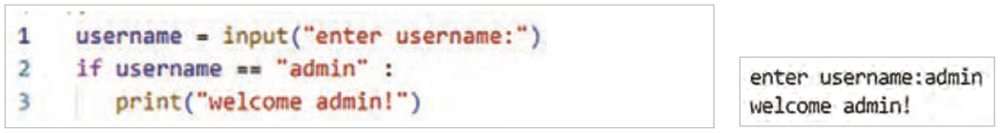
شکل ۵۱
صفحه ۲۳
عملگر (!=): مقایسه میکند آیا دو مقدار نامساوی هستند یا نه؟
در برنامه زیر در ابتدا price = 120 است و شرط درصورتیکه مقدار آن نامساوی با ۱۰۰ باشد برقرار شده و پیام "price is not true" را چاپ میکند (شکل52).
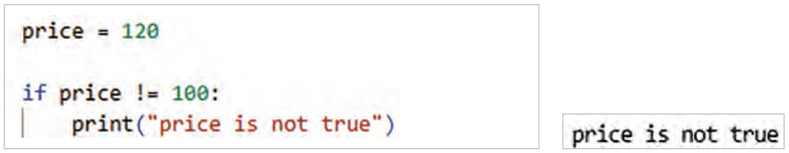
شکل ۵۲
عملگرهای منطقی (Logical Operators)
جدول ۲
عملگرهای منطقی
عملگر
کاربرد
and
و
or
یا
not
نقیض
در برنامهنویسی، برای بررسی همزمان چند شرط و تصمیمگیری دقیقتر از عملگرهای منطقی استفاده میشود. این عملگرها امکان ترکیب چند عبارت شرطی را فراهم میکنند و نتیجۀ آنها معمولاً یکی از دو مقدار درست (True) یا نادرست (False) است (جدول3).
عملگرهای منطقی معمولاً در کنار دستورات شرطی مانند if به کار میروند و به برنامهنویس کمک میکنند شرایط پیچیدهتری را بررسی کند.
عملگر and: این عملگر زمانی نتیجۀ درست (True) میدهد که تمام شرطها درست باشند.
مثال: در این مثال با استفاده از عملگر منطقی and هم زمان دو شرط username == "admin" و password == "1234" بررسی شده است و اگر کاربر هر دو را درست وارد کند پیام login successful نمایش داده میشود. برنامه را نوشته و اجرا کنید (شکل53).
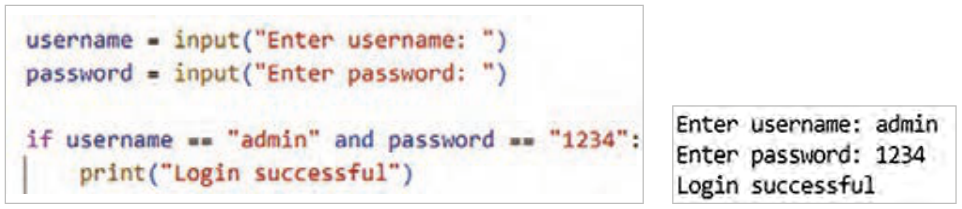
شکل ۵۳
صفحه ۲۴
عملگر or: این عملگر زمانی نتیجۀ درست (True) میدهد که حداقل یکی از شرطها درست باشد. اگر هر دو شرط نادرست باشند، نتیجه نادرست خواهد بود.
مثال: در این برنامه شرط با عملگر or بررسی میشود؛ یعنی اگر کاربر نام روز Friday یا Thursday را وارد کند، پیام Holiday نمایش داده میشود (شکل54).
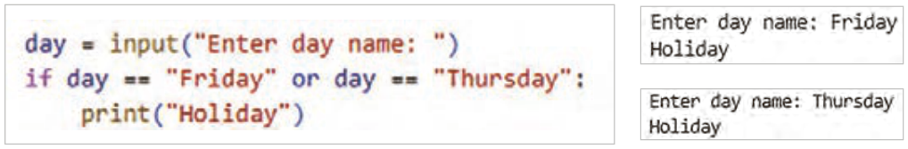
شکل ۵۴
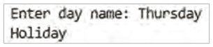
نوع دوم ساختار شرطی if – else :
if condition :
statements_if
else:
statements_else
ساختار if-else زمانی استفاده میشود که بخواهید در صورت درست بودن شرط، یک کار و در غیر این صورت کار دیگری انجام شود.
condition: عبارتی منطقی که نتیجۀ آن True یا False است.
statements_if: دستوراتی که در صورت درست بودن شرط اجرا میشوند.
else: به معنی در غیر این صورت است. زمانی که شرط درست نباشد، برنامه وارد بخش else میشود و کدهای آن اجرا میگردد.
statements_else: دستوراتی که در صورت نادرست بودن شرط اجرا میشوند.
صفحه ۲۵
مثال: برنامهای بنویسید که روزهای هفته را دریافت کرده و درصورتیکه جمعه باشد، پیام " you are off" و در غیر این صورت "you have to go to school" نمایش داده شود.
به نظر شما اشکال کد شکل55 چیست؟ اگر کاربر عبارتی غیر از روزهای هفته وارد کند چه پیغامی چاپ میشود؟
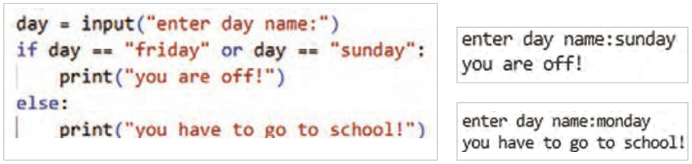
شکل ۵۵
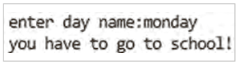
مثال: برنامهای بنویسید که اعداد مابین ۰ و ۱۰ را دریافت کند، اگر عدد دریافت شده در این بازه بود، پیام "The number is valid" و در غیر این صورت پیام "The number is not valid" نمایش داده شود. در این مثال دو شرط به طور همزمان بررسی میشود (شکل56).
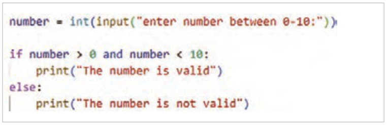
شکل ۵۶
صفحه ۲۶
مثال: برنامهای بنویسید که کاربر وضعیت اتصال اینترنت و سرعت اینترنت را وارد کند، اگر وضعیت اتصال "yes" و سرعت " بزرگتر یا مساوی3 " وارد شد، پیام " Internet is connected " چاپ شود و در غیر این صورت پیام "Internet is disconnect" چاپ شود (شکل57).
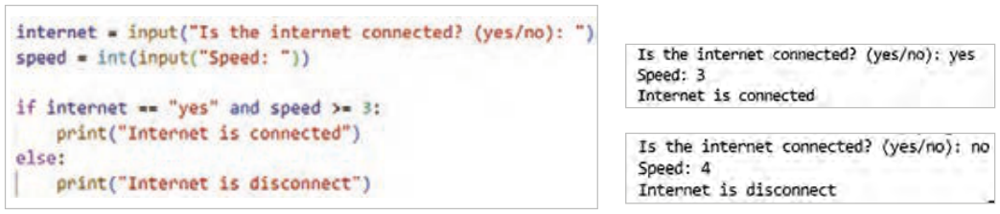
شکل ۵۷
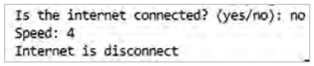
مثال: برنامهای بنویسید که اگر کاربر مهمان "guest" نبود، پیام "Welcome!" نمایش داده شود و در این صورت پیام "Access denied" نمایش داده شود.
not مقدار Boolean شرط را نقض میکند (شکل 58).
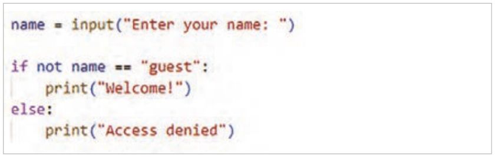
شکل ۵۸
ترکیب دو عملگر and و or: در برنامهنویسی گاهی نیاز است بیش از یک شرط را با هم بررسی کرد. برای این کار میتوان عملگرهای منطقی and و or را با هم ترکیب کرد.
مثال: برنامهای بنویسید که نام کاربری و رمز عبور را دریافت کند و اگر نقش کاربر "teacher" یا "admin" بود و رمز واردشده برابر با "1234" باشد. پیام "Access allowed" و در غیر این صورت پیام "Access denied" چاپ شود (شکل 59).
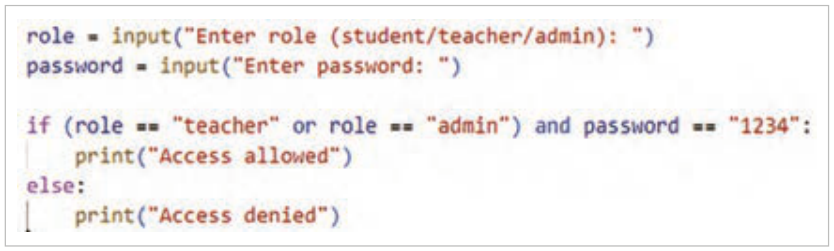
شکل ۵۹
Page 22
The if statement
In Python, the if statement is the simplest and most widely used tool for building a conditional structure. It evaluates a logical expression whose result can be True or False. If the result of the condition is True, its block of code runs; otherwise that block does not run.
The first type of the if conditional structure
if condition:
statement
Table 2
Comparison operators
Operator
Use
==
Is equal to
!=
Is not equal to
<
Less than
>
Greater than
>=
Greater than or equal to
<=
Less than or equal to
Condition: a logical expression whose result is True or False.
Statements: statements that run only if the condition is true.
Indentation: these statements must be written one tab further in than the if statement.
Comparison operators (Comparison Operators): these operators are used to compare two values or two variables, and their result is always either True or False (Table 2).
The equality operator (==): used to compare two values or two variables to find out whether they are equal.
Example: write a program that receives the user's name. If the entered name equals the value admin, it displays the message "welcome admin!" (Figure 51).
Figure 51
Page 23
The (!=) operator: checks whether two values are not equal.
In the program below, price = 120 at first, and the condition «its value is not equal to 100» holds, so it prints the message "price is not true" (Figure 52).
Figure 52
Logical operators
Table 2
Logical operators
Operator
Use
and
and
or
or
not
not
In programming, logical operators are used to check several conditions at the same time and to make more exact decisions. These operators make it possible to combine several conditional expressions, and their result is usually one of two values: true (True) or false (False) (Table 3).
Logical operators are usually used together with conditional statements such as if, and help the programmer check more complex conditions.
The and operator: gives a true (True) result when all the conditions are true.
Example: in this example the logical and operator checks two conditions at once, username == "admin" and password == "1234", and if the user enters both correctly the message login successful is shown. Write and run the program (Figure 53).
Figure 53
Page 24
The or operator: gives a true (True) result when at least one of the conditions is true. If both conditions are false, the result is false.
Example: in this program the condition is checked with the or operator; that is, if the user enters the day Friday or Thursday, the message Holiday is shown (Figure 54).
Figure 54
The second form of the conditional structure: if – else:
if condition :
statements_if
else:
statements_else
The if-else structure is used when you want to do one thing if the condition is true and something else otherwise.
condition: a logical expression whose result is True or False.
statements_if: the statements that run when the condition is true.
else: means «otherwise». When the condition is not true, the program goes to the else part and runs its code.
statements_else: the statements that run when the condition is false.
Page 25
Example: write a program that gets a day of the week and shows " you are off" if it is Friday, and "you have to go to school" otherwise.
What do you think is wrong with the code in Figure 55? What message is printed if the user types something that is not a day of the week?
Figure 55
Example: write a program that gets a number between 0 and 10. If the number is in this range, show the message "The number is valid"; otherwise show "The number is not valid". In this example two conditions are checked at the same time (Figure 56).
Figure 56
Page 26
Example: write a program in which the user enters the internet connection status and the internet speed. If the status is "yes" and the speed is " greater than or equal to 3 ", print " Internet is connected "; otherwise print "Internet is disconnect" (Figure 57).
Figure 57
Example: write a program that, if the user is not the guest "guest", displays the message "Welcome!", and otherwise displays the message "Access denied".
not reverses the Boolean value of the condition (Figure 58).
Figure 58
Combining the and and or operators: in programming you sometimes need to check more than one condition together. For this you can combine the logical operators and and or.
Example: write a program that gets a username and a password and, if the user's role is "teacher" or "admin" and the password entered equals "1234", prints "Access allowed"; otherwise it prints "Access denied" (Figure 59).